Đọc truyện · Desktop
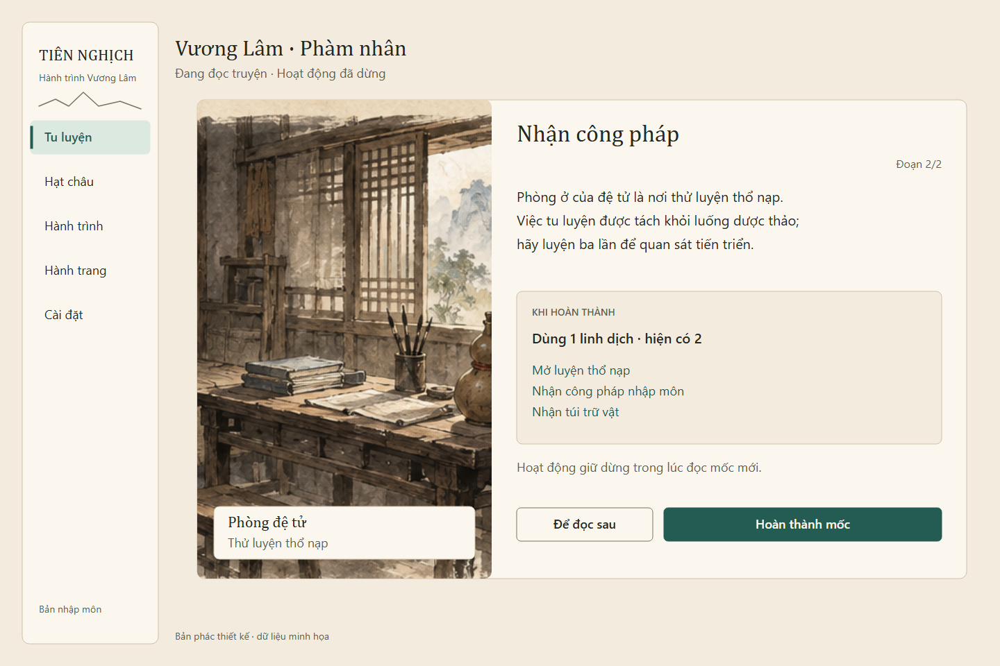
Chi phí chưa trừ khi đọc; nút cuối áp dụng mốc một lần.
Thiết kế hiện hành — GDD 0.28: chọn Vương Lâm, Tư Đồ Nam hoặc Lý Mộ Uyển từ đầu; có sẵn Kiếm Khí, Lôi Ấn và Ngự Phong Bộ R01; nhập môn Hằng Nhạc qua Ngưng Khí rồi phân hóa từ Trúc Cơ. Xem trải nghiệm Hằng Nhạc và mapping UX hiện hành. Ưu tiên sản xuất vẫn là map trước vận hành gameplay.
Các hình bên dưới thuộc UX idle v0.6: 14 bản vẽ tĩnh với snapshot E01–E08, hạt châu/nước/linh dịch, 480 tu vi, offline 8 giờ, import save và kết thúc tầng 1. Giữ để tham khảo bố cục; chúng không là bộ UX online hiện hành hoặc ảnh gameplay đã triển khai. Hình/nút và số liệu nguyên bản được giữ làm lịch sử.
Nhận diện bộ ba và chân dung UI có trạng thái ART riêng; kế hoạch động tác theo dõi nguồn/animation. Hai đệ tử là bộ thử lịch sử, không là lựa chọn chơi chính của GDD mới.
Client TypeScript + Three.js đã có preview ART/chuyển động và phòng online tối thiểu. Phạm vi chạy theo runbook; tài liệu/bản vẽ này không xác nhận tài khoản, lưu lâu dài hoặc gameplay tu tiên đã hoàn thành.
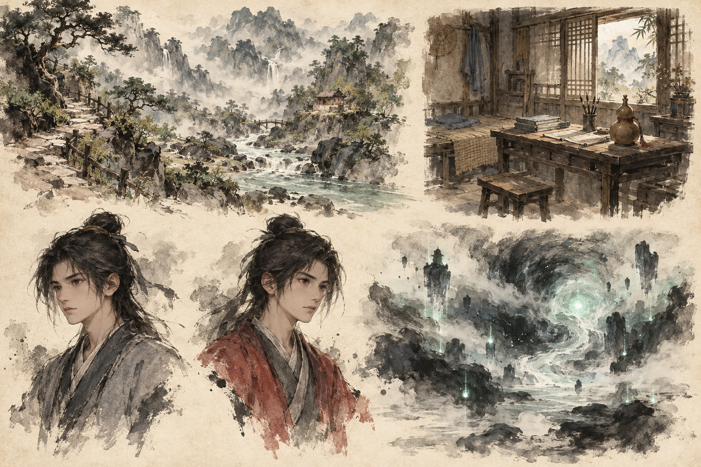
Tham chiếu phong cách cho các nguồn hình trong kế hoạch asset.
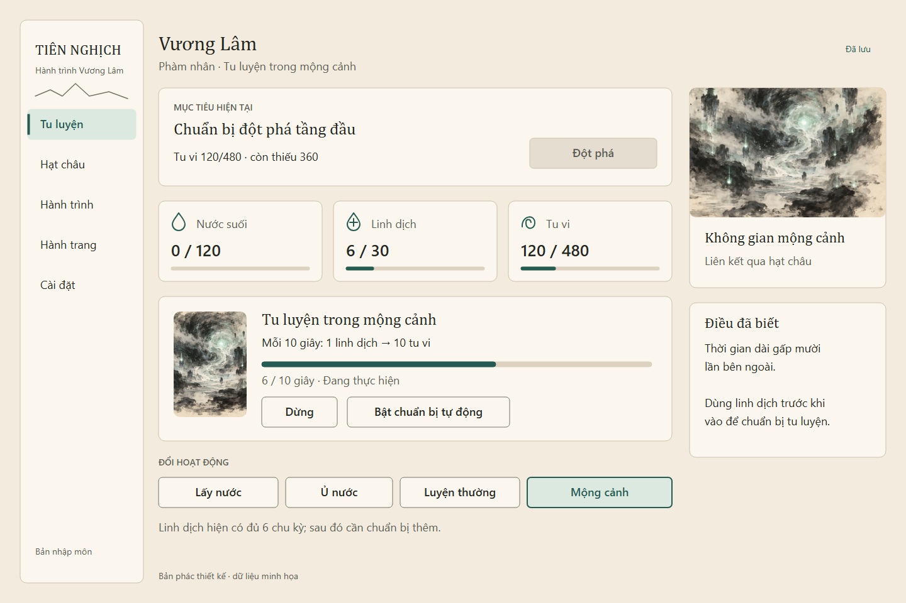
Phàm nhân; tu vi 120/480; còn 6 linh dịch; mộng cảnh thủ công đang chạy.
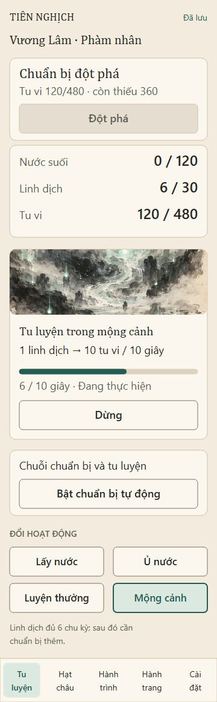
Nội dung một cột và điều hướng có nhãn xuống dòng.
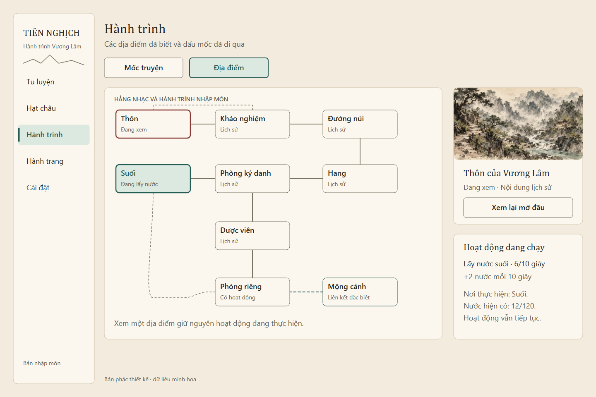
Node đang xem và nơi đang hoạt động có nhãn riêng.

Chi phí chưa trừ khi đọc; nút cuối áp dụng mốc một lần.
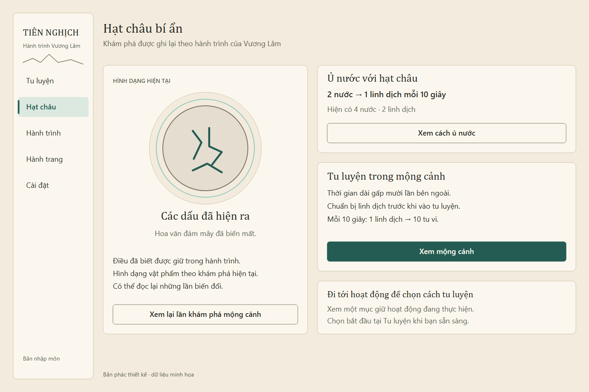
Chỉ hiện điều đã khám phá. Các nút Xem dẫn tới hoạt động hoặc lịch sử.
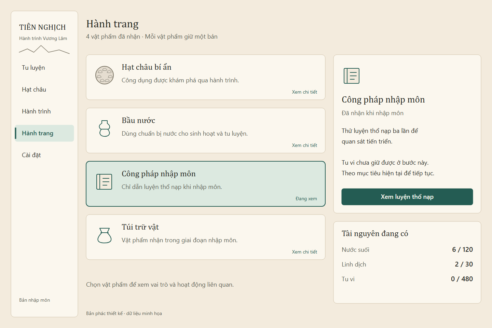
Bầu nước và túi trữ vật giữ vai trò trong truyện; tài nguyên có bảng riêng.
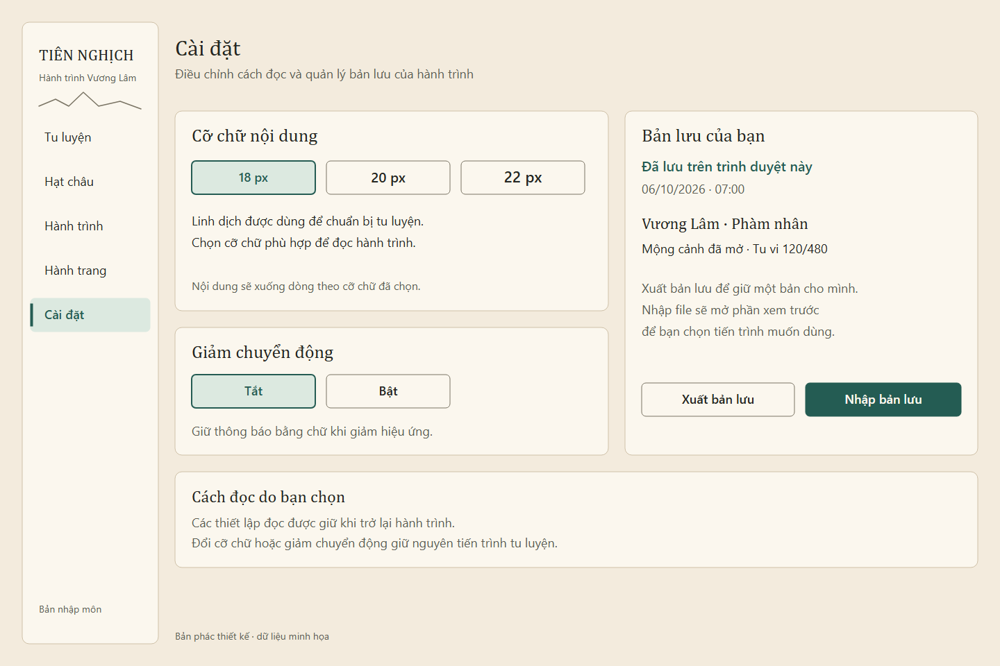
Mẫu chữ, trạng thái đã lưu và hai hành động quản lý bản lưu.
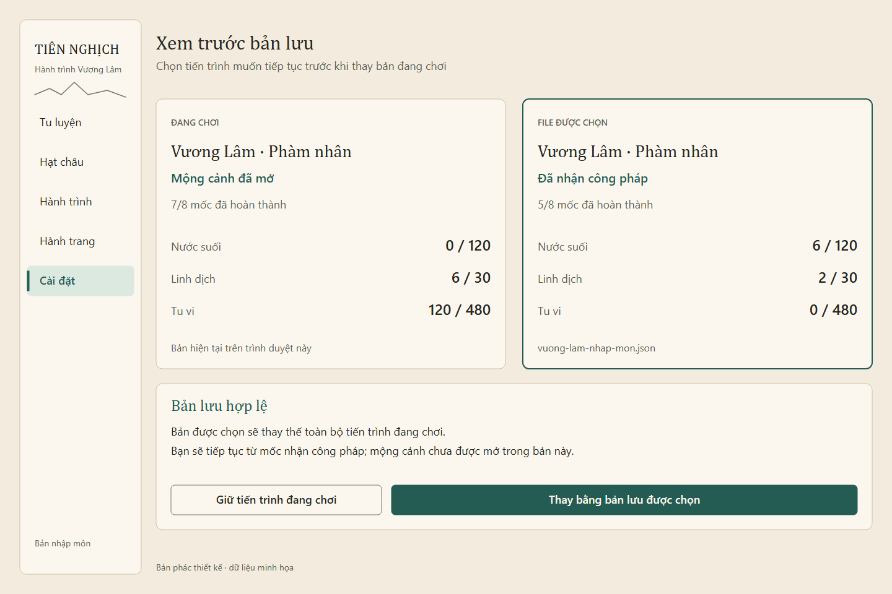
Chọn file chưa thay tiến trình; so sánh rồi chủ động chọn bản muốn tiếp tục.
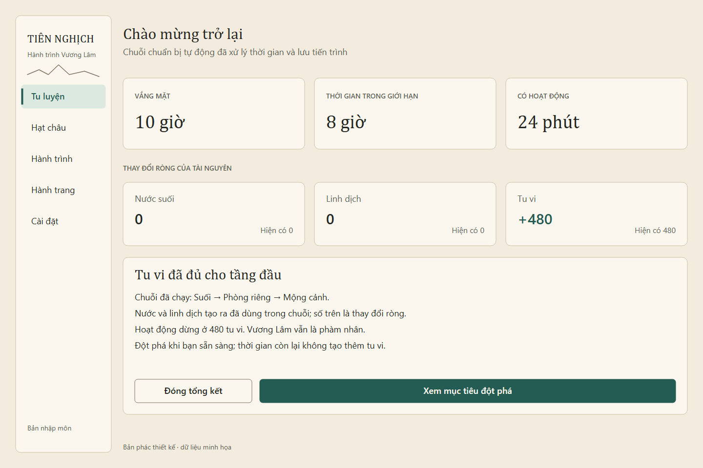
Số tài nguyên là thay đổi ròng. Đóng bảng giữ kết quả đã xử lý và lưu.
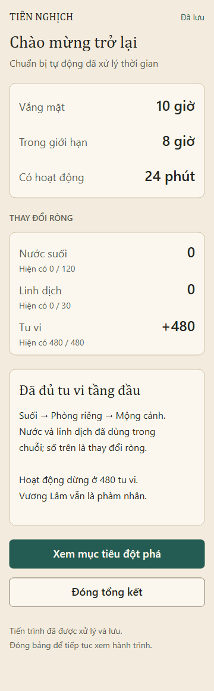
Cùng snapshot với desktop; thông tin và thao tác đọc theo một cột.
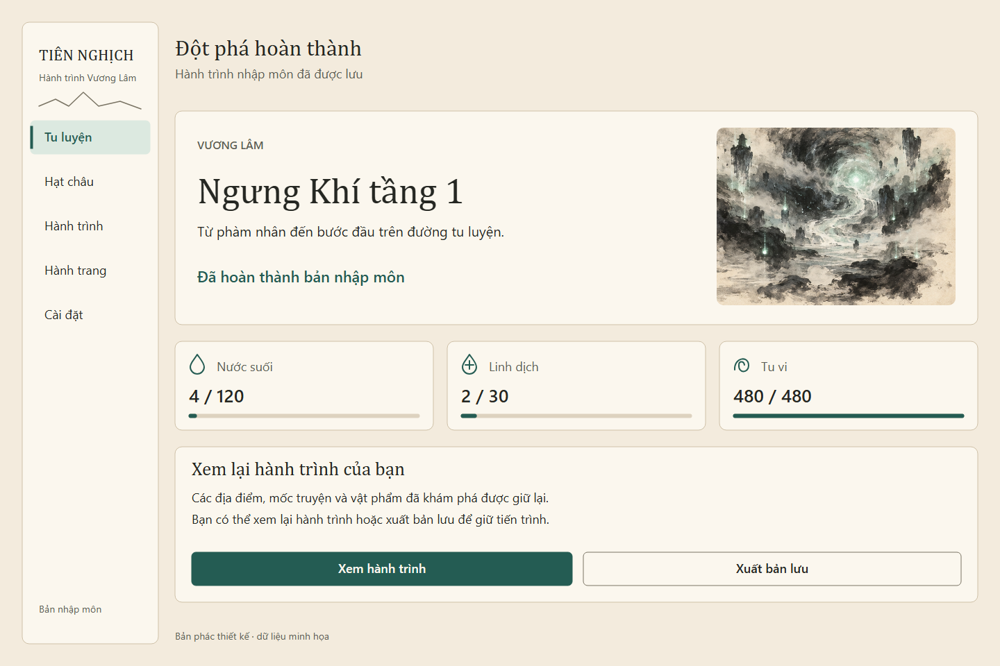
Kết quả sau nút Hoàn tất đột phá; tài nguyên còn lại được giữ.
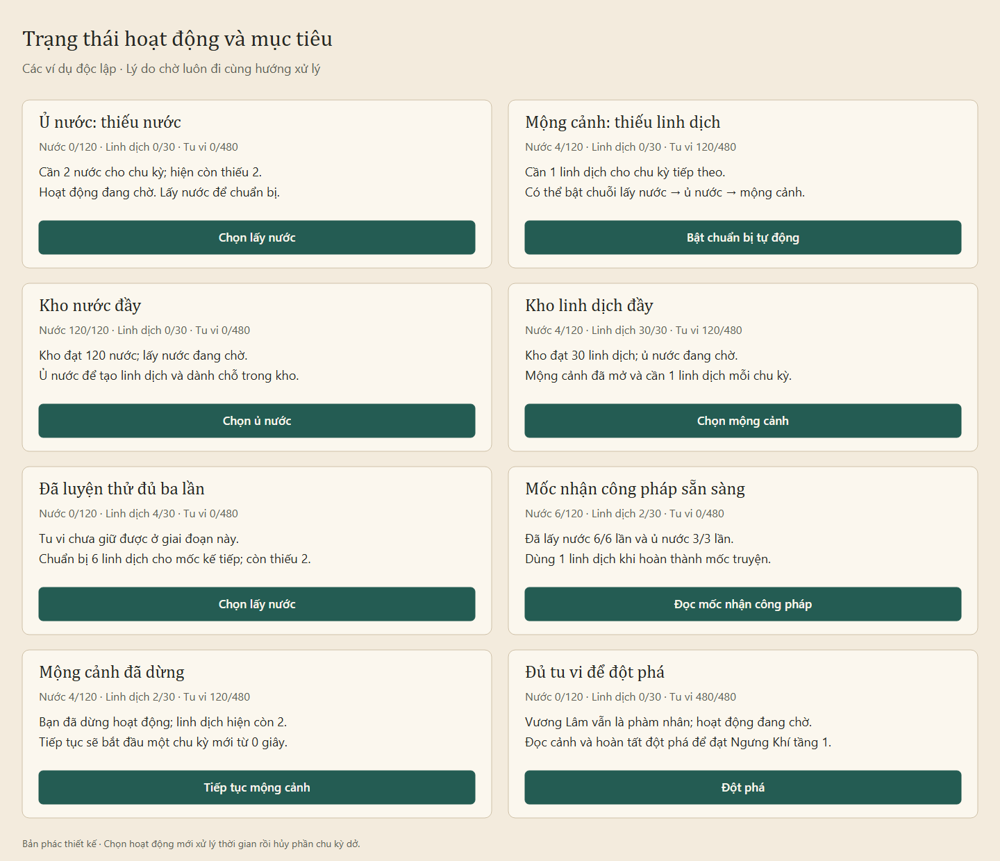
Các ô là ví dụ độc lập của thành phần; mỗi lý do chờ có hướng xử lý hợp lệ.
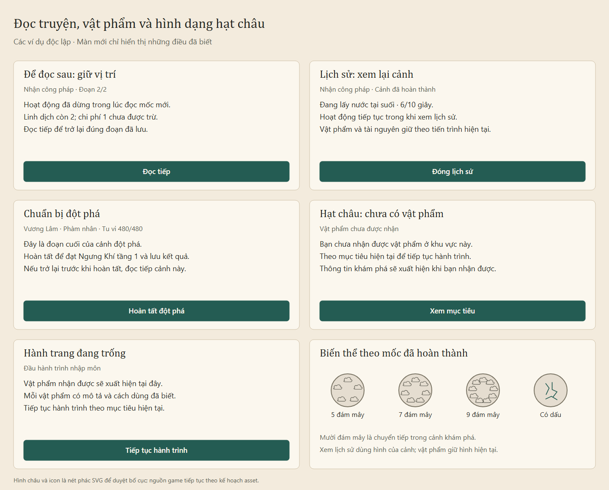
Hình châu là nét phác SVG. Hình trong lịch sử và hình vật phẩm hiện tại có quy tắc riêng.
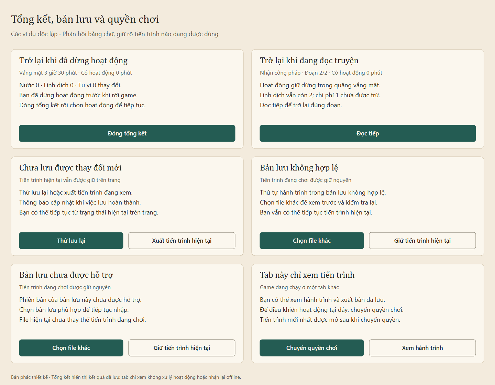
Phản hồi bằng chữ và hành động phù hợp với trạng thái đang dùng.
Luồng và snapshot lịch sử: Chi tiết màn hình idle. Các yêu cầu UX mới phải được biên tập/kiểm chứng theo GDD 0.28, trải nghiệm Hằng Nhạc và hợp đồng online; bản vẽ tĩnh không là nghiệm thu runtime.